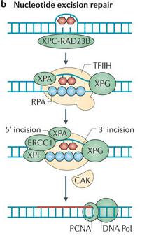

Genoomi terviklikkuse säilitamine ja vähiteke
Onkobioloogia
Taavi Päll
vanemteadur, VTAK
Recap
Tüvirakud on mutageneesi märklauad
Epiteelirakkude regeneratsioon sooleepiteelis
- Soole luumen sisaldab suures koguses toksiine ja baktereid.
- Inimene kaotab umbes 10\(^{11}\) epiteelirakku (~200 g) igapäevaselt.
- Laborihiire soole krüptis asuvad tüvirakud jagunevad elu jooksul umbes 1000 korda ilma jagunemispotentsiaali kaotamata ja kartsinogeensed mutatsioonid on harv nähtus.
- Sooleepiteeli regeneerivad tüvirakud ja transitoorselt paljunevad rakud (transit-amplifying, TA).
- Tüvirakud moodustavad 0.1-1% koe rakkudest.
- Epiteelkoe rakud diferentseeruvad transitoorselt paljunevatest rakkudest.
- Erütrotsüütide eluiga on ~120 päeva, mille järel nad põrnas endotsüteeritakse.
- Käärsoole epiteeli eluiga on 5-7 päeva kui nad surevad.
- Naha keratinotsüüdid surevad 20-30 päeva jooksul.
Epiteeli struktuur minimeerib geenikahjustusi
Tüvirakkude genoom on hästi kaitstud
- Koes kõige seespool asub tüvirakunišš.
- Krüpti põhjas asuvad 5 tüvirakku on soole sisu eest kaitstud tingituna oma asukohast ja lima poolt.
- TA rakud jagunevad 2-3 korda ja diferentseeruvad.

Soole mukoosa kaitseb vähi eest
GI vähi intsidents Muc2 hiirtel

| Grupp (n) | Hiiri GI vähiga |
|---|---|
| Muc2+/+ | |
| 6 kuud (6) | 0 |
| 1 aasta (18) | 0 |
| Muc2−/− | |
| 6 kuud (19) | 3 (16%) |
| 1 aasta (19) | 13 (68%) |
Tüvirakud on mutageneesi märklauad
Pikaealised rakud kontributeerivad vähi tekkesse
- DMBA/TPA naha kartsinogeneesi mudeliga tekkinud papilloomid ja adenoomid pärinevad pigem vaikeolekus rakkudest (naha tüvirakud?) kui aktiivselt jagunevatest.
- 5-FU (fluorouracil) mis inhibeerib aktiivselt jagunevaid rakke ei vähendanud oluliselt papilloomide teket, Morris et al., 1997.
- CML-i põhjustav Philadelphia kromosoom (Ph\(^1\), BRC-ABL translokatsioon) on olemas kõigis lümfoid ja müeloid raja rakkudes.
- See viitab, et mutatsioon on tekkinud pluripotentses tüvirakus.

Tüvirakkude strateegiad
Sümmeetriline ja asümmeetriline jagunemine

DNA kahjustuste vältimise strateegiad tüvirakkudes
Lisaks tüvirakkude suhteliselt aeglasemale jagunemisele ja nende asumisele anatoomiliselt kaitstud kohtades, toimib veel mitu teist mehhanismi:
- Apoptoos, röntgenkiirguse poolt kahjustatud hiire soole krüpti tüvirakud lähevad kiirelt apoptoosi selle asemel et DNA kahjustusi parandada.
- Toksiinide aktiivne transport rakust välja: MDR1 (multi drug resistance 1).
- Asümmeetriline replitseerunud DNA jaotumine.
Multi drug resistance perekonna valgud
Raku toksiinipumbad
- MRP (MDR associated protein) geeni transfektsioon SW-1573 inimese kopsu kartsinoomi rakkudesse muutis need rakud ravimiresistentseks.
- ABC transporterid on raku plasmamembraani ATP sõltuvad transpordivalgud, mis liigutavad rakust välja väga erinevaid substraate sh. toksiine.
| Drug | Relative resistance |
|---|---|
| Doxorubicin | 2.7 ± 0.4 |
| Daunorubicin | 3.2 ± 0.8 |
| Vincristine | 5.3 ± 1.3 |
| VP-16 | 4.9 ± 1.1 |
| Colchicine | 3.6 ± 0.1 |
| Rhodamine | 123 4.1 ± 0.3 |
| Taxol | 1.0 ± 0.1 |
P-glükovalgu struktuur
P-glycoprotein/MDR1

Asümmeetriline DNA jaotumine tütarrakkude vahel
Raku jagunemisel peegeldub tütarrakkude saatus ka nende DNA-s.

- Kui tüvirakud jagunevad, siis õdekromatiidid mis sisaldavad vanemat DNA ahelat (pildil roheliselt fluorestseeruv) segregeeruvad ühte tütarrakku.
- Vanem DNA segregeerub tavaliselt vähem diferentseerunud tütarrakku.
Matriits DNA selektiivne segregatsioon
Konserveerunud DNA ahel jääb tüviraku kompartementi
- DNA ahelad mida replikatsiooni käigus ei sünteesitud on nn. "konserveerunud" matriits ahelad.
- Värskelt sünteesitud DNA on "mitte-konserveerunud".
- Cairnsi hüpotees, 1975: replitseerunud tüviraku matriits DNA segregeerub tüvirakust tütarrakule ja uuesti sünteesitud ahelat sisaldav DNA pärandub transitoorselt prolifereeruvale tütarrakule.

Tüviraku nišš ei jagune intensiivselt
Somaatilised tüvirakud ei märgistu hästi DNA-sse lülituvate ühenditega, välja arvatud tekkimisel ja koe kahjustuste korral.
- Somaatilised tüvirakud säilitavad oma tekkimisel DNA-sse lülitatud märgise (3H-tümidiin) väga pika-aegselt.
- Lühiajaline kudede inkubeerimine 3H-tümidiiniga märgistab ainult transitoorselt jagunevad rakud ning koe uuenedes märgis kaob ruttu.
- Hiirtel puberteedis rinnanäärme tüvirakkude nišši moodustumisel sisse viidud 3H-tümidiin jääb aga sinna pidama sest tüvirakud jagunevad veel sümmeetriliselt (tekib kaks tüvirakku).

Konserveerunud DNA-d sisaldavad rakud karvanääpsus
Label-retaining cells eksperimentaalselt defineeritud rakupopulatsioon, mis säilitavad DNA-sse lülitatud märgise (nt. BrdU) ja mis peaksid olema aeglaselt jagunevad tüvirakud.

Mutantsete tüvirakkude teke läbi tsütotoksilisuse
Krooniline koekahjustumine võib istutada mutantse DNA tüviraku nišši
- Kartsinogeenid võivad toimida läbi koekahjustuse, kui kahjustada saavad ka tüvirakud.
- Tüviraku sümmeetriline jagunemine võib põhjustada viimases S-faasis sünteesitud mutantse DNA jäämise tüviraku nišši.
- Selline mutantne DNA omandab siis nn "surematu" staatuse.
- Alkohol, mis toimib tuumori promootorina, põhjustab just sellist tüüpi kahjustusi suuõõne epiteelile.
- Hüpoteetiline? super kartsinogeen oleks sellisel juhul aine mis on üheaegselt tsütotoksiline ja mutageenne.
Biokeemilised DNA reparatsioonimehhanismid
Lisaks raku ja koe tasemel toimivatele mehhanismidele, mis peaksid minimeerima muteerunud somaatilise DNA säilimise ja pärandumise ekisteerivad loomulikult ka biokeemilised DNA reparatsioonimehhanismid.
Biokeemilised reparatsioonimehhanismid toimivad muutustele nagu:
- replikatsioonivead mis tekivad DNA sünteesil (vale nukleotiidi lülitamine ahelase),
- nukleotiidide spontaansed biokeemilised muutused (depurineerumine ja depürimidineerumine, deamineerumine),
- mutageensete ühendite poolt põhjustatud nukleotiidide muutused (kiirgus, alkülatsioon).
DNA replikatsiooni vead
Imetajate genoomis on 15 DNA polümeraasi. Mõned funktsioneerivad genoomi replikatsioonil, kuid enamus toimivad DNA kahjustuste parandamisel
- DNA replikatsiooni viivad läbi DNA Pol \(\alpha\), Pol \(\delta\) ja Pol \(\epsilon\).
- DNA polümeraasid lülitavad vigase nukleotiidi DNA-sse sagedusega 1/100000 aluspaari kohta (\(10^{-5}\)).
- Inimese genoomi replitseerimisel teeb see diploidses rakus oleva \(6\times10^{9}\) aluspaari kohta 60000 mutatsiooni.
Hüpotees
Ilma genoomi korrashoiu mehhanismide lõhkumiseta oleks spontaanne raku mutatsioonisagedus liiga madal, et akumuleeruksid tumorigeneesiks vajalikud mutatsioonid.
Proofreading ja mismatch repair
- Kui DNA Pol (\(\alpha\), \(\delta\), \(\epsilon\)) lülitab vale nukleotiidi ahelasse, korrigeerib ta selle kohe oma 3'-5' eksonukleaasse aktiivsuse abil (proofreading)
- Proofreading põhineb, sellel et polümeraas tunneb järgmise nukleotiidi lülitamisel ära "vales" asendis 3' OH rühma ja jääb kinni.
- Proofreadingu tasemel eemaldatakse 99% vigu, sellest läbi lipsanud vead parandab mismatch repair mehhanism.
- Koos proofreadingu ja MMR mehhanismiga on totaalne vigade sagedus replikatsioonil \(10^{-9}\).

The proofreading is crucial for preventing mutations
- Pold1 või Pole katalüütilise subühiku eksonukleaasse aktiivsuse mutantsetel hiirtel on 10 korda kõrgem mutatsioonisagedus ja neil tekivad spontaansed kasvajad.
- \(Pold1^{exo/exo}\) hiired surevad 8 kuu vanustena erinevate kasvajate tagajärjel.
- \(Pole^{exo/exo}\) surevad enneaegselt soole adenoomide ja adenokartsinoomide tõttu.
- \(Pole^{exo/exo}\);\(Pold1^{exo/exo}\) kaksik-mutantsed hiired surevad veelgi kiiremini tüümuse lümfoomide kätte.
- Mlh1 (MutL homologue) - MMR valk

Pärilikud POLE and POLD1 mutatsioonid inimese soolevähis
- Heterosügootsed pärilikud POLE või POLD1 geenivariandid esinesid mitmetes multi-adenoomi ja või CRC patsientidel kuid mitte tervetel isikutel.
- Geenivariantidel POLE p.L424V ja POLD1 p.S478N on kõrge penetrantsus ja POLD1 mutatsioonid tõstsid ka endomeetriumivähi riski.
- POLE p.L424V ja POLD1 p.S478N mutatsioonid asuvad DNA polümeraaside ε ja δ proofreading eksonukleaassetes domäänides.
Pärmi S. pombe mudelis tõstis inimese POLD1 S478N mutatsiooni analoog tugevalt mutatsioonisagedust.
| Muutus | Mutatsioonisagedus (\(\times10^{9}\)) | Tõus (mutant/wild type) |
|---|---|---|
| C462N | 72 (9.6) | 12 |
| C462S | 4.2 (2.1) | 0.7 |
| Wild type | 6.0 (4.2) | 1 |
MMR ja mikrosatelliitide ebastabiilsus
Mononukleotiidsed kordusjärjestused ehk mikrosatelliidid on eriti avatud replikatsioonivigadele mis on tingitud mismatch repair funktsiooni kadumise tõttu.

Mikrosatelliitide ebastabiilsus soolevähis
MSI ebastabiilsus patsiendil kellel on nii soolevähk (C) kui rinnavähk (B).

- Vähi DNA milles esineb selline mikrosatelliitide ebastabiilsus võib klassifitseerida kas
- MSI-H(igh) >30% mikrosatellitide markereist on muutunud,
- MSI-L(ow) <30% mikrosatellitide markereist on muutunud.
- MSI-H esineb >80% mittepolüposse päriliku soolevähi patsientidel ja 100% patsientidel kellel on pärilikud ja hMSH2 või hMLH1 mutatsioonid.
Mismatch repair
- MMR on kahjustust välja lõikav protsess, kus mittepaarduvad nukleotiidid lõigatakse ahelast välja.
- MMR on seotud DNA replikatsiooniga, MMR valgud interakteeruvad PCNA-ga.
- Mittepaardumine põhjustab DNA paindumise/mügara (bulge) mis viib MMR valkude värbamiseni ja need lõikavad välja DNA segmendi kahjustusest lähima üheahelalise katkestuseni (nick) ja DNA pol\(\delta\) sünteesib jäänud tühimiku täis.

Endogeensed biokeemilised protsessid
- Normaalses raku keskkonnas neutraalsel pH-l esineb madalas kontsentratsioonis (\(~10^{-7}M\)) vesinik ja hüdroksüül ioone,
- mis reageerivad DNA-ga ja põhjustavad nukleotiidide depurineerumist või depürimideerumist ja deamineerumist.
Depurinatsioon
- Depurinatsioon on spontaanne adeniini või guaniini eraldumine deoksüriboosist.
- Imetajarakus toimub umbes 10000 depurinatsiooni päevas (seega, terves inimese kehas kehas kaotab \(10^{17}\) nukleotiidi iga päev oma puriini!).
- Depürimideerumine toimub kuni 100 korda väiksema sagedusega (500 päevas).
- Stabiilselt on inimese rakus genoomi kohta 4000-15000 alusevaba nukleotiidi.

Deaminatsioon
- Deaminatsiooni tõttu kaotavad tsütosiin, adeniin või guaniin oma amiinrühma.

- Uratsiili võib järgmise replikatsiooni ajal lugeda kui tümiini põhjustades C>T mutatsiooni.
- Deamineeritud nukleotiidid reeglina parandatakse reparatsiooniensüümide poolt.
- 5-Metüültsütosiini deamineerimise tagajärjel tekib täiesti normaalne tümiin ja T:G paardumine võib reparatsioonile "nähtamatuks" jääda põhjustades C>T punktmutatsiooni.
DNA oksüdeerimine
Mitokondriaalset või peroksüsomaalset päritolu hapniku radikaalid põhjustavad DNA aluste oksüdatsiooni. Tekib terve rida reaktsiooniprodukte.

DNA oksüdatsioon on seotud aeroobse metabolismiga

UV põhjustatud DNA kahjustused
- CPD on kõige sagedasem UV poolt indutseeritud kahjustus.
- CPD moodustub kui kui kõrvuti asetsevate pürimidiinide C5 ja C6 vahel tekib kovalentne side ja moodustub tsüklobutaan ring.
- Aluspaardumine tavaliselt ei häiru CPD tekkimise korral.
- CPD moodustub kõige sagedamini kõrvuti asetsevate tpmiinide vahel (TT-CPD).
Tsüklobutaan pürimidiin dimeer (CPD) ja 6-4-fotoprodukt

6-4-fotoprodukt
- Sageduselt teine UV kahjustus.
- Moodustub kovalentne side 5' pürimidiini C6 positsiooni ja 3' kõrvalasuva pürimidiinaluse C4 pos. vahel.
- 6-4-fotoproduktid häirivad tugevalt DNA heeliksit.
- Moodustuvad sagedasti 5'-CT-3' dinukleotiidide vahele.
C>A transversioonid suitsetajatel
- Üks sigaretimahv sisaldab \(10^{10}\) osakest ja 4800 ühendit.
- Paljud ühendid on kartsinogeensed, sh polütsüklilised aromaatsed süsivesikud (PAH; benzo[a]pyrene (BaP)), N-nitroosamiinid, aromaatsed amiinid ja metallid.
- Suitsetajatel on oluliselt kõrgem C>A transversioonide sagedus.
- Suitsetajate kopsuvähid sisaldavad 10X rohkem punktmutatsioone kui mittesuitsetajad.

DNA reparatsiooni ja kahjustuste tolereerimismehhanismid
Reparatsioonimehhanismid
- Lämmastikalust välja lõikav parandus (base excision repair, BER),
- Nukleotiide välja lõikav parandus (nucleotide excision repair, NER).
- DNA katkestusi ja lünkasid (gap) parandatakse homoloogse rekombinatsiooni (HR) ja mittehomoloogse otste ühendamise teel (NHEJ).
Tolereerimismehhanismid
- Kahjustustest DNA läbisüntees (translesion DNA synthesis)
- Maatrikshela vahetus (template switching)
DNA reparatsiooniensüümide akumuleerumine on seotud kaheahelaliste katkestustega
- Vähirakkudes tekib DSB (double starnd break)-le tugev vastus, mis põhjustab reparatsioonivalkude akumuleerumise kromatiinile.
- Reparatsiooniensüümide ekspressiooni reguleerivad onkogeenid, pidev replikatsioonikahvlite initsatsioon ja põrkumine.
- Replikatsioonikahvlite toppamine tõstab DSB riski ja tagajärjeks on katkestuste kasv.

Replikatsioonikahvli arresteerumine kahjustatud lämmastikaluste juures põhjustab genoomi ebastabiilsust

Kahjustustest DNA ahela läbisüntees (TLS)
- Kui DNA kahjustus jääb parandamata põhjustab see replikatsioonikahvli toppama jäämise.
- Seiskunud kahvel kollapseerub ja põhjustab DSB, mis võib viia genoomi ebastabiilsuseni.
- Rakud tolereerivad replikatsioonil ettejäävaid kahjustusi neist läbi sünteesides.
- Replikatiivsed proofreadingu aktiivsusega DNA polümeraasid Pol \(\alpha\), \(\delta\), \(\epsilon\) ei suuda kahjustustest läbi sünteesida.
- Imetajarakus 7 DNA polümeraasi millel on TLS võime.
- POLH, POLI (Pol-\(\iota\)), POLK, REV, Pol-\(\zeta\), POLQ ja POLN.
- Ühelgi TLS Pol-idest pole eksonukleasset proofreadingu aktiivsust.
Lämmastikalust välja lõikav reparatsioon (BER)
- Substraadiks on uratsiiljäägid, ROS-kahjustatud alused, hüdrolüütilised reaktsiooniproduktid ja metülatsioonid.
- Kahjustatud lämmastikaluse eemaldab aluse spetsiifliline DNA glükosülaas (nt. UNG).
- Tekkinud lämmastikaluseta koha eemaldab AP endonukleaas (AP, apyrimidinic või apurimidinic; APEX1).
- 5'-deoksüriboosfosfaadi (dRP) lõikab välja dRP lüaas (POLB ühe domääni aktiivsus).
- Järele jäänud 1 nukleotiidse augu sünteesib täis POLB (Pol \(\beta\)).
- BER tähendab ühe nukleotiidi lämmastikaluse eemaldamist ja nukleotiidi asendamist.

Nukleotiide välja lõikav parandus (NER)
- Heeliksit rikkuvaid modifikatsioone põhjustavad
- UV kiirgus, cisplatin, polütsüklilised aromaatsed süsivesikud (PAH).
- Mõlemale poole kahjustust tehakse üheahelaline katkestus ja kahjustus lõigatakse välja.
- 27-29 nuklotiidi pikkune auk sünteesitakse uuesti POL-\(\delta\) või POL-\(\epsilon\) poolt.
- GAP-filling sõltub PCNA-st ja ssDNA siduvast RPA valgust.
NER eemaldab DNA heeliksit rikkuvad modifikatsioonid.

Xeroderma pigmentosum
- Autosomaalne retsessiivne sündroom mida põdevaid inimesi iseloomustab äärmine fototundlikkus (intsidents 1:250000).
- Kõrge nahavähi risk ja neuroloogilised defektid.
- XP on põhjustatud inaktiveerivatest mutatsioonidest NER geenides.
- XP geene on kokku 8, seitse neist siis NER funktsiooniga.
- XP-V põhjustab TLS puudulikkus, mis on tingitud POLH mutatasioonidest.

XP, bypass (TLS) polümeraas ja vähk
XP-V põhjustavad mutatsioonid TLS DNA polümeraasis POLH (Pol-\(\eta\)).
- POLH vahendab tolerantsust UV-kiirguse poolt tekitatud TT-CPD-le.
- POLH inserteerib korrektselt AA nukleotiidid TT-CPD vastu.
- XP-V mutatsioonid rikuvad POLH interaktsioonid TT-CPD-ga.
- Polh-/- hiirtel tekivad UV-indutseeritud nahakasvajad.
- UV põhjustab Polh-/- hiirtel DNA kaheahelalisi katkestusi.
- XP-V patsientidel tekivad lamerakulised nahakartsinoomid, kui spontaansetest nahavähkidest POLH geeni mutatsioone leitud ei ole.
- Kopsu ja maokasvajates on POLH ekspressioon vähenenud.
6-4-fotoprodukti TLS
6-4-fotoproduktidest läbisünteesi viib korrektselt, vigadeta läbi POLI
- POLI võib sünteesida ka läbi TT-CPD, kui POLH on puudu, kuid mutageenselt/vigaselt.
- Poli-/- rakud ei ole UV tundlikud ja hiirtel ei teki kasvajaid.
- Poli-/-;Polh-/- hiirtel on võrreldes Polh-/- hiirtega hoopis UV mutagenees vähenenud, viidates et Poli on ~vigane tagavara Pol UV kahjustuste jaoks.
- Võib oletata, et POLI vastutab ka XP-V patsientide nahavähi eest.
- Poli-/-;Polh-/- topelt knock-out hiirtel tekib siiski natuke rohkem kasvajaid ja nad surevad rutem kui Polh-/- hiired.

BER defektid ja vähk
- POLB-l on 5'-deoksüriboos-fosfaadi (dRP) lüaassne aktiivsus, mida on vaja lämmastikaluse kadumisel alles jääva suhkru eemaldamiseks DNA ahelast.
- POLB mutatsioone esineb 40% soolevähis (Donigan et al., 2012).
- POLB on samas ka üle-ekspresseeritud erinevates vähkides.
- POLB üle-ekspressioon takistab normaalset replikatsiooni ja põhjustab mutatsioonide teket.
- Polb üle-ekspresseerivatel hiirtel tekib rohkem osteosarkoome.
- Polb KO hiired surevad embrüonaalselt.
- Polb+/- hiirtel on rohkem lümfoome, kuid elulemus oluliselt ei kannata.

Melaniin kui päikesevari
Naha UV kaitse
- Melanotsüüdid nahas sisaldavad melanosoome, mis kanduvad edasi keratinotsüütidesse.
- Melanosoomid moodustavad keratinotsüütides supranukleaarseid mütsikesi.

Glutatioon-S-transferaas (GST)
- Glutatiooni konjugeerimine takistab tsütotoksilistel ainetel reageerida raku makromolekulidega/märklaudadega.

- Glutatioon on glütsiin-tsüsteiin-glutamiin tripeptiid.
- Endogeensed GST substraadid: O-Quinones of catecholamines and dopamine, postaglandins, lipid peroxidation products generated by reactive oxygen species.
- Eksogeensed GST substraadid: polycyclic aromatic hydrocarbons, alpha, beta unsaturated aldehydes, molecules with epoxide groups, chemotherapeutic agents.